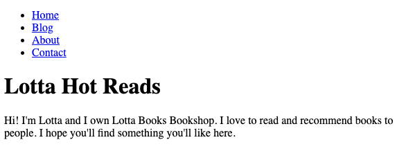
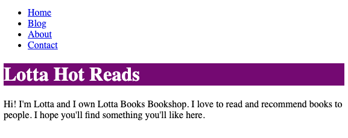
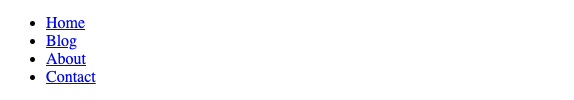
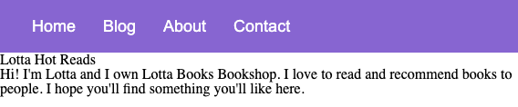
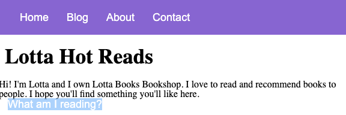

Module 4: HTML & CSS II
Intro to CSS Styles
HTML defines the structure of a webpage by using tags to identify different types of content, such as headings, paragraphs, images, and links. Content is essential for any webpage, but by itself, it is bland and not very eye-catching.
<!DOCTYPE html>
<html>
<head>
<title>My Portfolio</title>
</head>
<body>
<h1>Hi! Welcome to my portfolio.</h1>
<p>Take a look at my projects <a href="projects.html">here</a>.</p>
<p>Thanks for visiting!</p>
</body>
</html>
Most websites have added their own unique look and feel to make their content stand out and even help users intrinsically navigate the site. This is all part of the page's style and is built using Cascading Style Sheets, more commonly referred to as CSS. CSS adds consistent styling to a webpage and is necessary to create a visually appealing and professional-looking website.
In this core competency, you will learn how to add styles using CSS, and common CSS properties, investigate CSS using Chrome dev tools, and add styles based more specifically on a tag's class and id.
Targeting HTML with CSS
You may recall that HTML tags have a start and end tag along with some optional content like this:
<p>Thanks for visiting!</p>
Almost every element can be given an attribute called style. This will create the CSS rules for this element. You use inline styling when you use the style attribute on an element.
<p style="border-style: solid">Thanks for visiting!</p>
The CSS properties are defined in the " " in property: value format. If you add more than one style, you use the ; to separate them.
When you use inline styles, remember that your code can get hard to read if you want to apply the same style for multiple elements. You can use internal styling to apply the same style to multiple elements.
Internal styling is when you add a <style> tag and some CSS rules in the . Take note of the h1 and body being called in the CSS:
<!DOCTYPE html>
<html>
<head>
<title>My Portfolio</title>
<style>
/* The says that every p tag on this page will have a solid border around it*/
p {
border-style: solid;
}
/* Anything within the body tag (including its child tags) will have the same background color */
body {
background-color: lemonchiffon;
}
</style>
</head>
<body>
<h1>Hi! Welcome to my portfolio.</h1>
<p>Take a look at my projects <a href="projects.html">here</a>.</p>
<p>Thanks for visiting!</p>
</body>
</html>
The CSS rules for p will apply to all p elements in this document. The body CSS will apply to anything within the body tag.
Let's take a closer look at the structure of CSS rules by adding some rules for the h1 tag. You can add CSS to give the h1 a different background color and padding by adding the following:
h1 { /* the tag that you want to target */
background-color: white; /* the background-color property is set to white */
padding: 10px; /* the padding is set to 10 pixels */
}
Breaking this code down, a CSS rule has three parts:
- the target,
- the curly brackets, and
- the rules themselves
Each CSS rule must contain at least these parts to be valid.
Note:
- Internal styling can get long and will only apply to one page.
- External styling is when the styles are in a separate .css file that contains style rules for an HTML document. These styles can be linked to and used on the elements specified on any HTML page.
How to Build It
Lotta has shown you what she was able to put together with her own knowledge of HTML. For now she wants to focus on the home page. This is the HTML Lotta provided us to start her home page:
<nav>
<ul>
<li><a href="index.html">Home</a></li>
<li><a href="about.html">Blog</a></li>
<li><a href="projects.html">About</a></li>
<li><a href="projects.html">Contact</a></li>
</ul>
</nav>
<h1>Lotta Hot Reads</h1>
<p>
Hi! I'm Lotta and I own Lotta Books Bookshop. I love to read and recommend
books to people. I hope you'll find something you'll like here.
</p>
Without any styles applied, this is what the HTML renders out to look like:
She mentions that her desired color scheme includes purple and white, so you decide to change the background color of the heading to purple and the text to white.
h1 {
background-color: purple;
color: white;
}
The HTML and CSS render out to this:
Learning general CSS properties
As you have seen, CSS properties are defined in the property: value format. You can use several properties to create your own styles and layouts for your web pages.
Here are some basic CSS properties to start off with:
color - sets the text color. The value can be an HTML color name like “DodgerBlue” or a hex code like #1E90FF.
p {
color: #1E90FF;
}
a {
color: purple;
}
font-family - sets the font (ie. Arial, Times, Helvetica, etc) of the text. The font name should be surrounded by “” if it has more than one word and separated by a space.
div {
font-family: Arial
}
h2 {
font-family: "Times New Roman";
}
font-size - sets the size of the text. The value will be a number followed by its unit (ie px for pixels).
h1 {
font-size: 16px;
}
background-color - sets the background color of an HTML element. Like the font color, the value can be a name or hex value.
div {
background-color: crimson;
}
padding - sets the space inside an element. The value can be four numbers, each followed by a unit. The values are separated by a space that corresponds to the top, right, bottom, and left inner sides, respectively. If all your padding sides values are the same, you can set the padding to a single value.
div {
padding: 10px 5px 10px 5px;
}
p {
padding: 10px;
}
margin - sets space outside an element. The value can take four numbers, each followed by a unit. The values are separated by a space that corresponds to the top, right, bottom, and left outer sides, respectively. If all your margin values are the same, you can set the margin to a single value.
div {
margin: 20px 10px 40px 5px;
}
p {
margin: 10px;
}
border - adds a border around an element. The value will be 3 settings for the border, each separated by a space. They are:
- a number followed by a unit for the thickness
- a style (ie. solid, dotted, dashed, etc.)
- the color
h1 {
border: 1px solid #333333;
}
text-align - set the alignment of text within an element. The value can be left, right, center, or justify.
div {
text-align: center
}
width and height - sets the dimensions of an element. The value can be a number followed by the unit.
div {
width: 800px;
height: 600px;
}
Like HTML tags, there are far too many CSS properties to memorize. For now, get comfortable with the importance of CSS. You can always search for the appropriate properties whenever you need them. Additionally, depending on where you work, you will use the same properties enough times to where they will become like second nature.
How to Build It
You decide to tackle the navigation bar (navbar) next. Lotta told you to use her brand colors purple and white and gave you a free range of how to style it.
<nav>
<ul>
<li><a href="index.html">Home</a></li>
<li><a href="about.html">Blog</a></li>
<li><a href="projects.html">About</a></li>
<li><a href="projects.html">Contact</a></li>
</ul>
</nav>
The HTML without styling looks like this rendered in the browser:
Using inspiration from other blogs, you want to make the menu main navbar horizontal. You also decide to increase padding and between the list items and the space inside the nav. To incorporate the brand colors, you also decide to make the background purple and the text white.
Using inspiration from other blogs, you want to make the menu main navbar horizontal. You also decide to increase padding and margin between the list items and the space inside the nav. To incorporate the brand colors, you also decide to make the background purple and the text white.
a {
color: black;
text-decoration: none;
margin: 15px;
color: white;
font-size: 18px;
font-family: Arial;
}
ul {
display: flex;
}
li {
list-style-type: none;
}
nav {
background-color: mediumpurple;
padding: 20px;
}
The nav with the styles applied:
The blog is coming together!
Keep in mind that there are an insane amount of CSS properties (a quick glance at an average web page should give you an indication!). Without CSS, all web pages would be just plain text, so anytime you see something more exciting it is the CSS at work.
Overwriting user agent CSS rules by utilizing resets
As you create your own CSS styles, you may have noticed that some style properties are already present before you code anything. For example, if you create a new link with an <a> tag, the default text color will be blue, and the link will also be underlined. Another example of this default styling happens with buttons. If you create a new button with the <button> tag, some browsers will make it square while another browser will give it rounded edges. As a developer, you didn't write these default styles; these are provided by the browser. These browser-created default styles rules are called User Agent styles.
The User-Agent styles are a default stylesheet that are applied by web browsers like Google Chrome or Safari to HTML documents when no other stylesheet is specified. The purpose of this stylesheet is to provide a foundational universal style for HTML elements so that they can be rendered consistently across different browsers and platforms.
However, some default styles applied by different browsers can be inconsistent and may cause compatibility issues or unwanted effects on your web page. CSS resets are a way to override or reset the default styles provided by the User Agent CSS, providing a clean slate for your own CSS styles.
These resets can vary and can be anywhere from 15 lines to 500. One of the most common resets is the Meyer reset:
/* http://meyerweb.com/eric/tools/css/reset
v2.0 | 20110126
License: none (public domain)
*/
html, body, div, span, applet, object, iframe,
h1, h2, h3, h4, h5, h6, p, blockquote, pre,
a, abbr, acronym, address, big, cite, code,
del, dfn, em, img, ins, kbd, q, s, samp,
small, strike, strong, sub, sup, tt, var,
b, u, i, center,
dl, dt, dd, ol, ul, li,
fieldset, form, label, legend,
table, caption, tbody, tfoot, thead, tr, th, td,
article, aside, canvas, details, embed,
figure, figcaption, footer, header, hgroup,
menu, nav, output, ruby, section, summary,
time, mark, audio, video {
margin: 0;
padding: 0;
border: 0;
font-size: 100%;
font: inherit;
vertical-align: baseline;
}
/* HTML5 display-role reset for older browsers */
article, aside, details, figcaption, figure,
footer, header, hgroup, menu, nav, section {
display: block;
}
body {
line-height: 1;
}
ol, ul {
list-style: none;
}
blockquote, q {
quotes: none;
}
blockquote:before, blockquote:after,
q:before, q:after {
content: '';
content: none;
}
table {
border-collapse: collapse;
border-spacing: 0;
}
As you can see, a CSS reset is a set of CSS rules. These rules aim to remove or override the default styles provided by the User Agent stylesheet. CSS resets typically set all margin and padding values to 0, remove list styles, and reset font sizes and styles, among other things.
Note: Different resets have different ways to incorporate this reset in your code. For the Meyer reset, you would add these lines to the beginning of your CSS.
How to Build It
While checking how the navbar looked in different browsers, you noticed that there was white space or margin you don't remember setting around the navbar. Lotta wants to remove the whitespace.

You believe this to be the user agent css at work and use the Meyer CSS reset at the beginning of the stylesheet.
It removed the whitespace however, there were some default styles that you liked before, such as the h1's size. You could remove the reset and just target what is causing the margin but you decide to keep the reset and add a new CSS rule in your style to style the h1. That way, you can have a fresh slate and keep the styles consistent.
h1 {
font-size: 35px;
font-weight: bold;
padding: 20px 10px 20px 10px;
}
It is looking better!
Remember that by using a CSS reset, you can ensure that your CSS styles are applied consistently across different browsers and platforms. However, it's important to note that CSS resets can also override some useful default styles. Depending on your project, you can decide how to combat any necessary changes.
CSS selectors
As you may recall, CSS selectors are used to target HTML elements and apply styles to them. So far, you have become familiar with tag selectors:
p {
background-color: #333333;
color: #FFFFFF
}
This selects all <p> tag and applies background color of #333333 and text color of #FFFFFF.
However, what if you had two paragraphs, but you wanted to give them different background colors? How could you target each one?
Besides tag selectors, we can also target elements that have classes and/or id attributes. Classes are useful for applying the same styles to many elements. IDs should be unique within an HTML document, so this selector is useful for targeting a specific element.
If you want to use a class on your elements, add the attribute class to the elements followed by an = and then your desired name for the class.
<p class="thanks">Thanks for visiting!</p>
You would then target it in your CSS like so:
.thanks {
color: #FFFFFF;
}
If you want to give your element an id, add the attribute id to the element followed by an = and then your desired name for the id.
<p id="project">Take a look at my projects!</p>
You would then target it in your css like so:
#project {
background-color: #666666;
}
Note: Besides tags class and id selectors, there are many other types of CSS selectors you can use and research to help target specific elements in your code.
How to Build It
Lotta wants to add a link at the bottom of her intro homepage that will take the visitor to her latest blog post. You add the link and notice that something is off.
You inspect the HTML and see that the code for your new link is present but you can't see it because of the text color.
Your previous CSS rule sets all of them to be white. You remember that you can add an id attribute to the tag which will allow you to just style the reading link. While we are at it, let's update the tag to match the heading space.
<a id="reading-link" href="#">What am I reading?</a>
#reading-link {
color: rebeccapurple;
font-weight: bold;
}
You did it! You were able to target the link for reading and give it its own unique style.
One thing to note is that you can have both a class and an id on an element. As you build more and more complex web applications you'll find yourself leaning heavily on both.
Conclusion
You learned a lot about making your web applications more appealing!
You learned how to target not only the html tags, but you also learned how to create selectors that will get an element by its class or id. You also got familiar with some common CSS properties like the background color, margin, and border. You also learned how to incorporate a CSS reset to help make your styles stay consistent across multiple browsers
Take a look at your favorite website or other online portfolios and take note of the colors, font-size, and other details for inspiration with your own styles. You may also want to review any previous work where you used a lot of inline styles and try using internal CSS along with classes, ids instead. Try opening your other projects in different browsers as well. Would a reset help any changes you see? What CSS rules should you add on top of that?
Keep up the practice!
Guided Project
In this guided project, you will feel the power of CSS, and experiment with the extensive tooling that Chrome offers to harness it. Along the way you will learn how to target HTML elements and add visual styles to them, how to create CSS stylesheets, and about precedence, selector specificity, default styles, overriding styles, injecting content to the page using CSS, about CSS resets and more. The CSS specification is so huge no web developer knows it all, but all developers must know the basics!
Starter repo: Guided Project
Module 4 Project: HTML & CSS II
This Module Project focuses on using CSS to add style to a webpage. CSS, or Cascading Style Sheets, is an essential tool for designing webpages as it separates content from presentation. The primary purpose of CSS is to help users navigate webpages by creating visually appealing and easy-to-understand layouts. However, applying CSS can be tricky, and it takes a lot of practice to feel comfortable with it. But with practice, you will gain the confidence and proficiency needed to create engaging, user-friendly websites.
The module project contains advanced problems that will challenge and stretch your understanding of the module's content. The project has built-in tests for you to check your work, and the solution video is available in case you need help or want to see how we solved each challenge, but remember, there is always more than one way to solve a problem. Before reviewing the solution video, be sure to attempt the project and try solving the challenges yourself.
If you can successfully get through all the Module Projects in a sprint, you are ready for the Sprint Challenge and Sprint Assessment, which you must pass to move on to the next Sprint.
Instructions
The link below takes you to Bloom's code repository of the assignment. You'll need to fork the repo to your own GitHub account, and clone it down to your computer:
Starter Repo: HTML & CSS II
- Fork the repository, and then use the green button and your terminal to clone the project down to your computer.
- Next, open the
index.htmlfile in both VSCode and the Chrome Browser. VSCode is where you will make code changes, and Chrome is where you will check if your code is passing all the tests. - To check the tests, right-click on a Chrome window, select "Inspect," and ensure the console is visible. Then return to VSCode and start coding a solution to the first challenge. When you want to check if your code is correct, go to Chrome and refresh the page to run the tests and see your results.